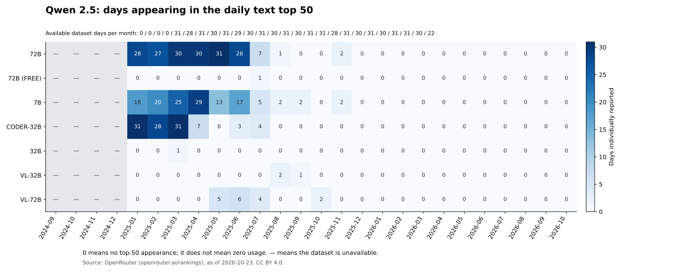
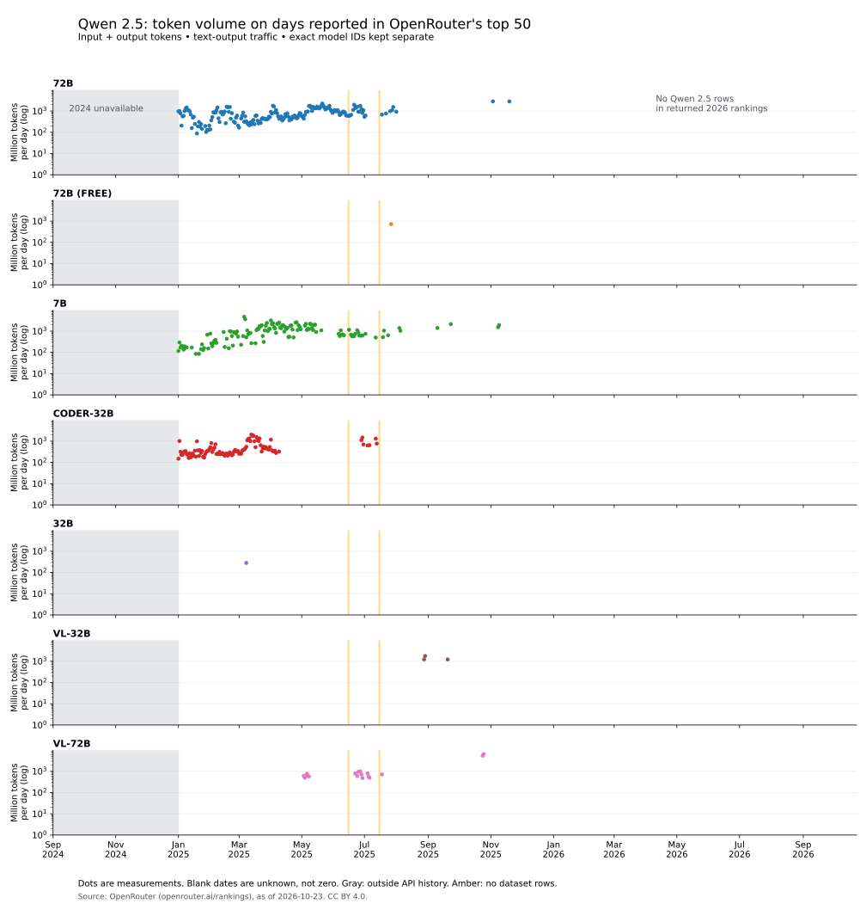

OpenRouter · snapshot collected October 23, 2026
How much is Qwen2.5
still used?
Qwen2.5 has disappeared from OpenRouter’s daily text top 50 in our snapshot. The 7B-Instruct model last appears on November 9, 2025. The last appearance of any matching Qwen2.5 model ID is November 19, 2025, for 72B-Instruct. None appears again through October 22, 2026.
We asked because Qwen2.5-7B provides a strong example of why precise keys can matter in our asymmetric KV-cache experiments. That raises a separate question: how much current traffic might such a result affect?
It does not show that Qwen2.5 has no users, that its absolute traffic fell by a particular amount, or that the result describes deployments outside OpenRouter.
We requested this period, but the endpoint starts in January 2025.
Rankings exist on 363 days. Qwen2.5’s final observed appearance is November 19.
All 295 daily rankings are present. Zero appearances does not mean zero tokens.
September 2024–October 2026 · seven observed model IDs
From regular appearances to no top-50 entries
The monthly view shows how often each variant reached the rankings. The daily view shows token volume only when a model was individually reported. Neither graph fills unknown traffic with zero.
On a narrow screen, scroll each graph sideways or open the full-size image.
Days in the top 50, by month

Daily input plus output token volume

Seven observed IDs · free alias kept separate
When each variant last appeared
The table counts days when OpenRouter reported each model individually. All appearances were in 2025. The highlighted row corresponds to the model name used in our reference experiment; the rankings do not identify its serving precision.
| Model · OpenRouter ID | Last appearance | Days in top 50 | Best daily rank |
|---|---|---|---|
| Qwen2.5-7B-Instruct · reference modelqwen/qwen-2.5-7b-instruct | 133 | 9 | |
| Qwen2.5-72B-Instructqwen/qwen-2.5-72b-instruct | 184 | 9 | |
| Qwen2.5-Coder-32B-Instructqwen/qwen-2.5-coder-32b-instruct | 104 | 9 | |
| Qwen2.5-32B-Instructqwen/qwen2.5-32b-instruct | 1 | 45 | |
| Qwen2.5-VL-32B-Instructqwen/qwen2.5-vl-32b-instruct | 3 | 42 | |
| Qwen2.5-VL-72B-Instructqwen/qwen2.5-vl-72b-instruct | 17 | 21 | |
| Qwen2.5-72B-Instruct · free aliasqwen/qwen-2.5-72b-instruct:free | 1 | 48 |
These seven IDs are the variants observed in the rankings, not a complete catalog of Qwen2.5 checkpoints. Days in the table need not be consecutive. An absent model has unknown individual volume; it is not assigned zero.
A useful reference, with limited evidence of current reach
The Qwen2.5 quantization result still describes the tested model and recipes. This usage analysis does not weaken that measurement. It does limit the case for treating Qwen2.5 alone as evidence of a broad benefit for today’s serving workloads. The comparisons on newer models matter for that question.
A model can leave the top 50 while still handling substantial traffic. Other models can grow faster, and a model may also become unavailable. These rankings cannot distinguish those explanations or establish why users changed models. They do not measure direct provider traffic, local deployments, or private deployments outside OpenRouter.
There is no provider breakdown in this dataset. Providers are pooled under each model ID. It cannot tell us which provider serves most Qwen2.5 traffic, or whether a provider uses BF16, quantized weights, or a particular KV-cache format.
Scope, missing dates and source
What we measured
We collected OpenRouter’s daily rankings API on October 23, 2026, using period=day and modality=text. Each reported total is input plus output tokens summed across requests for one model on one day. It is not a session total, initial-prompt size, request count, or user count.
The endpoint reports 50 model IDs and combines the remainder into other. We selected IDs matching ^qwen/qwen-?2\.5(?:-|:|$) and ranked the named models by daily token totals, excluding other. We kept the free 72B alias separate. Third-party fine-tunes and distillations are not inferred to belong to the family. Text-output filtering can include VL models receiving multimodal inputs.
We requested September 1, 2024–October 22, 2026. The 2024-only request was rejected because history begins on January 1, 2025. Within the available period, June 15 and July 15, 2025 return no rows for any model. Those are dataset gaps with an unknown cause, not evidence of zero traffic or a service outage. We did not interpolate them.
The snapshot contains 658 daily rankings and 443 Qwen2.5 model/day observations. Counts and last-appearance dates above come from those observations. Raw responses, request metadata, checksums and analysis scripts were retained for this snapshot. Historical API revisions or a newer collection may change the findings; this page is dated rather than a live tracker.
Source: OpenRouter (openrouter.ai/rankings), as of 2026-10-23. Dataset licensed under CC BY 4.0. knlp’s analysis filters model IDs, computes ranks and appearance counts, and labels missing coverage. Tokenizers differ across providers, so tokens are a workload measure rather than an exact comparison of text quantity.